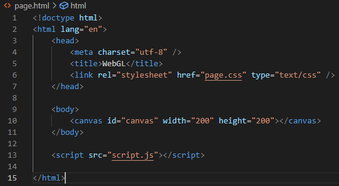
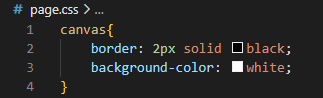
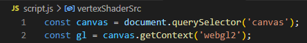
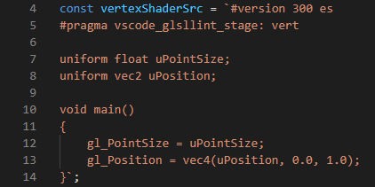
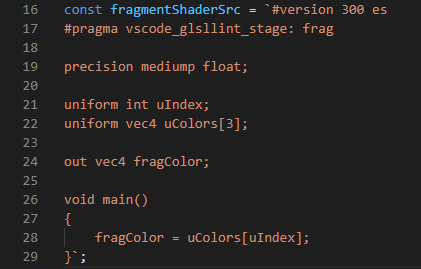
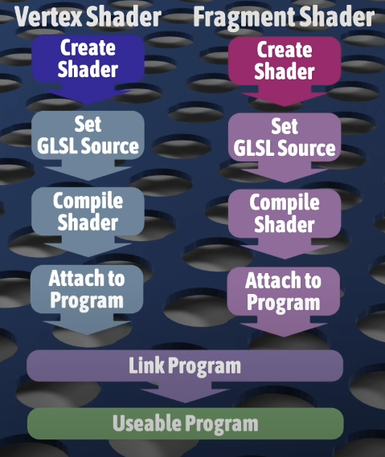
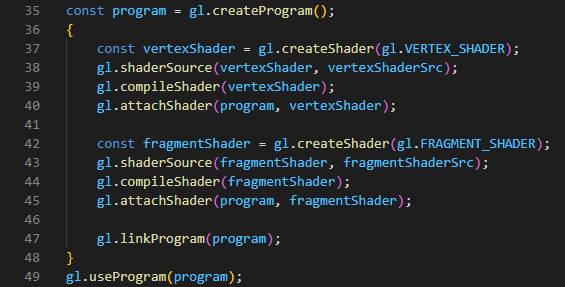
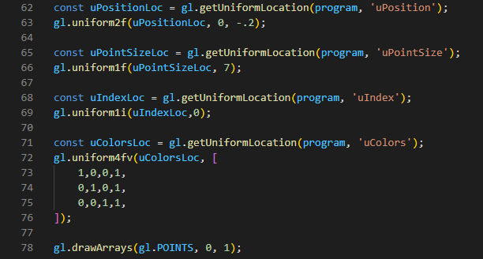
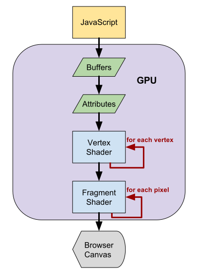

WEB GL
¿Que es webGL?
WebGL es una interfaz de programación de aplicaciones gráficas (API) creada para su uso en aplicaciones web. Se basa en el lenguaje integrado de gráficos abiertos (OpenGL) (ES). Está actualmente diseñada y mantenida por el grupo Khronos Group como código de dos partes: código de control y código de sombreado (shaders)
WebGL se utiliza para representar gráficos 2D y 3D interactivos en navegadores web compatibles, sin tener que descargar ni instalar ningún complemento. La API esta implementada con JavaScript.
¿Como empezar?
Tener conocimiento basicos acerca las tegnologias de la web (html , css , JavaScript), de como funciona una API grafica, saber como ocurre el proceso de dibujado, que se necesita para tal y cual es el camino para que se muestre en pantalla. Esto puede ser complicado si no se tiene conocimiento previo de OpenGL, sin embargo se puede aprender webGL desde 0.
Estructura basica
Crear la pagina
Crear un canvas y asignarle un borde
 Obtener el contexto del canvas dentro del script
La variable webgl2 contiene una referencia a un contexto de representación WebGL. Este contexto es la interfaz principal de la API de WebGL.
Shaders
Los shaders son programas de dibujo precompilados que se ejecutan dentro de la GPU. Están escritos en un lenguaje similar a C llamado GLSL y proporcionan instrucciones de renderizado a la GPU. Para realizar el render existen dos tipos de shaders: Vertex and fragment.
En el codigo se utilizan diferentes tipos de variables, como const y uniform, existen otras importantes por lo que hay que entender sus diferencias y su relacion con las funciones a trabajar.
Vertex shaders
Los vertex shaders describen cómo dibujar los vértices que forman uno o más polígonos. Estos estan definidos un unas coordenadas, sin embargo, el vertex shader no conoce las posiciones reales de estas, solo sabe que existen y que estarán disponibles a través de algún atributo proporcionado cuando se ejecute el programa.
Lo definimos de la siguiente manera:
Se crea una variable const en este caso vertexShaderSrc
Dentro de esta se define, un uniform llamado uPosition del tipo vec2 (un vector bidimensional) contiene datos posicionales sobre un vértice. Asigne ese valor en un vec4 (vector de 4 dimensiones) correspondiente a la variable global especial WebGL gl_Position, como uposition es de solo dos dimensiones, se debe completar el restante de la variable gl_Position, el cuarto valor hace referencia a un multiplicador de coordenadas.
Tambien se define, un uniform llamado uPointSize del tipo float contiene el valor del tamaño a dibujar, en este caso asignado a un float correspondiente a la varibale global especial WebGl gl_PointSize.
Fragment shaders
Los fragment shaders describen el espacio entre los vértices. Mientras que el vertex shaders se invocó una vez para cada vértice, el programa de fragment shaders se invocó una vez para cada píxel en el espacio entre esos vértices. Este describe el color de cada píxel.
Lo definimos de la siguiente manera:
Se crea una variable const en este caso fragmentShaderSrc
Dentro de esta se define, un variable de precision en este caso un valor de precision en este caso mediump float. Un uniform llamado uIndex del tipo int y un uniform llamado uColors[3] del tipo vec4. Se crea un out correspondiente a la variable global especial WebGL fragColor de tipo vec4 que sera el que contendra los colores RGBA, en este caso se asigna a la variable uColores el indice uIndex para escojer entre Rojo(0), Verde(1), azul(2).
Los shaders actuan en conjunto, asignados a un programa. Ya que se han definido, seguimos el siguiente camino para poder crearlos y unirlos al programa.
Por lo que realizando en codigo se utilizan funciones propias de WebGL determinadas para cada uno de los fines
Como se observa, primero se crean con la funcion gl.createShader(), luego se le asigna el valor que antes definimos con la funcion gl.shaderSource(), se compilan con la funcion gl.compileShader(), luego los unimos a el programa con la funcion gl.attachShader(), linkeamos el programa con la funcion gl.linkProgram, por ultimo definimos el programa a usar con la funcion gl.useProgram().
Definir coordenadas, grosor y color
Como en este caso utilizamos uniform, para definir nuestras variables tenemos que utilizar la siguiente Estructura
En el caso de utilizar uniform, no es necesario un buffer, ya que no se almacenaran los vertices, si no que, se iran dibujando mediante la ejecucion del programa
Para obtener los valores de las variables, definimos una variable de tipo const la cual señalará mediante la funcion gl.getUniformLocation() la variable a modificar. Para asignarle un valor se tendra que utilizar las funciones gl.uniform(tipodedato). Por ejemplo, en el caso de uPosition, sabemos que son coordenadas bidimensionales, entonces la funcion a utilizar es gl.uniform2f(), donde recibe de primeras la ubicacion guardada en la constante, y los valores x,y cambiantes.
Por ultimo se llama a la funcion gl.drawArrays() donde se define el modo de dibujado, vertice inicio, vertice final.
Existe diferentes maneras de dibujar, en este caso no se utilizo la estructura completa, sin embargo es funcional, no guardamos ningun tipo de dato si no que lo definimos solo para dibujarlo 1 vez.
Una estructura completa utilizaria un buffer y una variable que guarde los puntos definidos, por lo que el pipeline basico se veria de la siguiente manera.
PipeLine Basico
Si se quiere indagar mas sobre el funcionamiento de WebGL, existe una lista de reproduccion realizada por Andrew Adamson, la cual explica como funciona el WebGl moderno.
Existen paginas como developer mozilla, WebGL fundamentals o tutorialspoint donde se encuentran definiciones, tutoriales, demos del funcionamiento de WebGL, sus componenetes, funciones y estructura inicial.
RESULTADO
Observaciones
Los dibujos mostrados anteriormente son hechos por medio del codigo explica mediante el uso de uniforms, estos solo permiten el uso de la primitiva punto. Si desea ver el codigo completo puede visitar el repositorio de gitHub o bien inspeccionar el sitio.